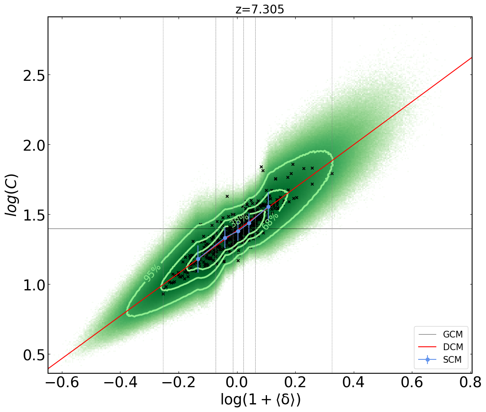

Model Recombination in Large EoR Simulation
DECI-14: The impact of inhomogeneous subgrid clumping on cosmic reionization II: modelling stochasticity

Previously, in Mao et al. 2019 (Paper I) we presented a more general model for the sub-grid gas
Clumping Factor, determined by the local density, aim to quantify the effect of small-scale density fluctuations on the local recombinations.
In my work (Bianco et al. 2021) we extend this further, using an empirical Stochastic Model (SC) based on the results from high-resolution numerical simulations, where the relevant fluctuations are fully resolved.
Our model reproduces well both the mean density-clumping relation and its scatter.
In the figure, the realization of the clumping field realization for a simulated volume of 714 Mpc per side, the horizontal line (solid black) is the globally averaged clumping factor (BHC). In red the one-to-one fit (Inhomogeneous Clumping) from our previous work. The green area indicates the realization estimated by our stochastic model, while the blue error bar points represent its expected value and standard deviation. Crosspoints are the coarse the small high-resolution N-body data used to calibrate the model parameters. Full list of the parameters use for the Stochastic Model are free to download: Parameters Table PDF
Subsequently, we post-processed with the C2Ray radiative transfer code to study the effect of the different approaches to clumping modelling in simulations of Cosmic Reionization. The animation below (doubel click for full screen) shows the residual neutral gas in IGM in our simulations at reionization end (z≃6.5). We compare the globally averaged clumping method BHC (left) with our Stochastic Clumping model SC (right).
{kind=link}
In the figure, the realization of the clumping field realization for a simulated volume of 714 Mpc per side, the horizontal line (solid black) is the globally averaged clumping factor (BHC). In red the one-to-one fit (Inhomogeneous Clumping) from our previous work. The green area indicates the realization estimated by our stochastic model, while the blue error bar points represent its expected value and standard deviation. Crosspoints are the coarse the small high-resolution N-body data used to calibrate the model parameters. Full list of the parameters use for the Stochastic Model are free to download: Parameters Table PDF
Subsequently, we post-processed with the C2Ray radiative transfer code to study the effect of the different approaches to clumping modelling in simulations of Cosmic Reionization. The animation below (doubel click for full screen) shows the residual neutral gas in IGM in our simulations at reionization end (z≃6.5). We compare the globally averaged clumping method BHC (left) with our Stochastic Clumping model SC (right).